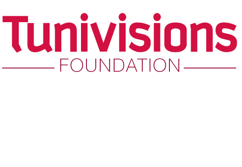

Tunivisions Foundation
Media visions Édition a fait preuve d'une grande ingéniosité en implantant son nouveau concept " Tunivisions Foundation " dans plus de 160 universités tunisiennes étatiques et privées et en intégrant plus de 4000 Tunimateurs afin d’animer la vie estudiantine. Une nouvelle vision des choses a été proposée : créer des clubs de proximité qui accueillent tous les étudiants. Tunivisions est le plus grand réseau estudiantin purement Tunisien.
Tunivisions Club ISGIS
Club Tunivisions ISGIS existe depuis 4 ans, visant à promouvoir la culture entrepreneuriale chez les étudiants et forger leurs connaissances dans ce domaine. Aussi nous travaillons sur le développement personnel chez nos membres, et enfin nous visons aussi la couverture des activités culturelles, artistiques et sportives ainsi que l'organisation d'évènements de formation, de technologique et industrielle et de loisir pour valoriser les régions et mettre en avant le côté positif.